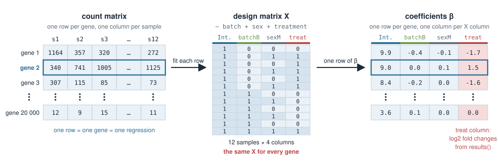
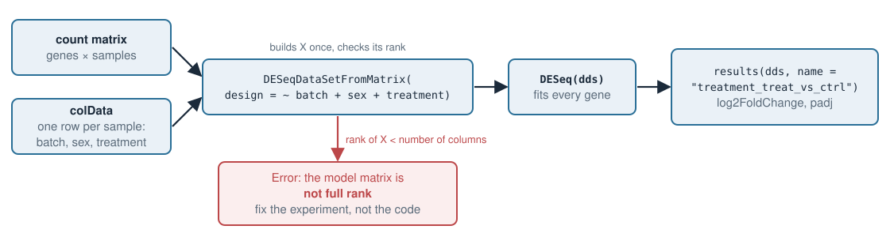

Linear models — Design matrices in R
In Design matrices for covariates you built \(X\) by hand, and in Confounding & Simpson’s paradox you saw why the columns you put in decide the answer. Today R builds \(X\) for us, and we hand the same \(X\) to the tools used for real omics data. You will be able to:
model.matrix, and control the reference level with relevel and factor.NA that lm returns for a column it cannot estimate.design = ~ batch + sex + treatment, and read log2 fold changes and adjusted p-values.\[ \mathbf{y} = X\boldsymbol\beta + \boldsymbol\varepsilon \]
(Intercept) is a column of 1s; it holds \(\beta_0\), the mean of the reference group.In R you never type \(X\) yourself. You write the formula and R builds \(X\), with the same rules you used by hand.
model.matrix() builds \(X\)d <- data.frame(
treatment = c("ctrl", "ctrl", "ctrl", "treat", "treat", "treat"),
sex = c("F", "M", "F", "M", "F", "M"),
bmi = c(22, 25, 28, 24, 27, 30))
model.matrix(~ treatment + sex, data = d)
# (Intercept) treatmenttreat sexM
# 1 1 0 0
# 2 1 0 1
# 3 1 0 0
# 4 1 1 1
# 5 1 1 0
# 6 1 1 1treatmenttreat, sexM.ctrl, F) get no column: they are in the intercept.attr(...) lines below the matrix; you can ignore them.model.matrix(~ treatment + bmi, data = d)
# (Intercept) treatmenttreat bmi
# 1 1 0 22
# 2 1 0 25
# 3 1 0 28
# 4 1 1 24
# 5 1 1 27
# 6 1 1 30bmi is copied in as it is. Its coefficient is the change in \(y\) per BMI unit, holding treatment fixed.~ treatment + I(bmi - mean(bmi)). The slope does not change.relevel()R sorts the levels of a factor alphabetically, and the first one becomes the reference.
d$treatment <- factor(d$treatment)
levels(d$treatment)
# [1] "ctrl" "treat" # ctrl is the reference: good
d$treatment <- relevel(d$treatment, ref = "treat")
colnames(model.matrix(~ treatment, data = d))
# [1] "(Intercept)" "treatmentctrl" # now the column is "ctrl vs treat"trt and untrt. Alphabetically trt comes first, so untrt vs trt is what you get unless you relevel.d$time <- c("0h", "6h", "24h", "0h", "6h", "24h")
colnames(model.matrix(~ time, data = d))
# [1] "(Intercept)" "time24h" "time6h" # alphabetical: "24h" < "6h"
d$time <- factor(d$time, levels = c("0h", "6h", "24h"))
colnames(model.matrix(~ time, data = d))
# [1] "(Intercept)" "time6h" "time24h" # the order you meant"2" comes before "6", so 24h comes before 6h.0h happens to stay first, but the columns are in a confusing order. With day3, day7, day14 the reference itself goes wrong: R picks day14.factor(x, levels = ...).d$time_h <- c(0, 6, 24, 0, 6, 24)
colnames(model.matrix(~ time_h, data = d))
# [1] "(Intercept)" "time_h" # one slope per hour| formula | columns for time | what it assumes |
|---|---|---|
~ time (factor) |
time6h, time24h |
any shape: each time point has its own mean |
~ time_h (number) |
time_h |
a straight line in time |
Now suppose all controls were sequenced in batch A and all treated samples in batch B.
d$batch <- c("A", "A", "A", "B", "B", "B")
X <- model.matrix(~ batch + treatment, data = d)
X[, ]
# (Intercept) batchB treatmenttreat
# 1 1 0 0
# 2 1 0 0
# 3 1 0 0
# 4 1 1 1
# 5 1 1 1
# 6 1 1 1
ncol(X) # 3 coefficients to estimate
qr(X)$rank # 2 -> only 2 independent columns: no unique solutionbatchB and treatmenttreat are identical columns: perfect confounding.qr(X)$rank \(<\) ncol(X) means infinitely many \(\boldsymbol\beta\) fit equally well, as in Linear systems in R.lm does with an aliased columnd$y <- c(10, 11, 12, 14, 15, 16)
coef(lm(y ~ batch + treatment, data = d))
# (Intercept) batchB treatmenttreat
# 11 4 NAlm does not stop. It keeps the columns in order, and the first one that is a combination of the earlier ones gets NA (“aliased”).~ treatment + batch) and the 4 moves to treatmenttreat.NA coefficient is a warning sign: your design cannot separate these effects.lm: the Simpson exampleThe batch example from Confounding & Simpson’s paradox: drug vs control in two batches, with the drug mostly in batch A.
g <- data.frame(
batch = c("A", "A", "A", "A", "B", "B", "B", "B"),
treatment = c("ctrl", "treat", "treat", "treat", "ctrl", "ctrl", "ctrl", "treat"),
expr = c(10, 12, 12, 12, 20, 20, 20, 22))
coef(lm(expr ~ treatment, data = g))
# (Intercept) treatmenttreat
# 17.5 -3.0 # drug looks harmful
coef(lm(expr ~ batch + treatment, data = g))
# (Intercept) batchB treatmenttreat
# 10 10 2 # +2 within each batchbatchB column turns \(-3\) into \(+2\). The rank is 3 = number of columns, so \(\boldsymbol\beta\) is unique: batch is partly confounded, not perfectly.
library(DESeq2)
# counts : genes x samples matrix of integers (2000 x 12)
# samples: one row per sample, same order as the columns of counts
head(samples, 3)
# batch sex treatment
# s1 A F ctrl
# s2 A M treat
# s3 A F treat
dds <- DESeqDataSetFromMatrix(countData = counts,
colData = samples,
design = ~ batch + sex + treatment)colData is the sample table; the design formula refers to its columns.results(dds) without arguments reports the last variable.
DESeq() and resultsNames()dds <- DESeq(dds) # normalises, estimates dispersions, fits every gene
resultsNames(dds)
# [1] "Intercept" "batch_B_vs_A"
# [3] "sex_M_vs_F" "treatment_treat_vs_ctrl"treatmenttreat as treatment_treat_vs_ctrl: “treat compared with the reference ctrl”.batch_B_vs_A and batch_C_vs_A.head(res[order(res$padj), ], 4)
# baseMean log2FoldChange lfcSE stat pvalue padj
# g5 1975.7 2.27 0.24 9.36 8.1e-21 1.6e-17
# g144 891.0 1.97 0.24 8.37 5.6e-17 5.5e-14
# g17 816.8 2.02 0.26 7.67 1.7e-14 1.1e-11
# g130 336.3 -2.00 0.28 -7.16 8.2e-13 4.0e-10
sum(res$padj < 0.05, na.rm = TRUE)
# [1] 195| column | meaning |
|---|---|
log2FoldChange |
the treatment coefficient: treat vs ctrl, holding batch and sex fixed |
lfcSE |
its standard error |
padj |
p-value adjusted for testing 2000 genes: among genes called at padj < 0.05, about 5% are expected to be false |
padj is NA for genes with very low counts, which DESeq2 leaves out before adjusting (use na.rm = TRUE when counting).In this experiment the treatment is unbalanced across batches: batch A has 1 control and 5 treated, batch B has 5 controls and 1 treated. Gene g138 is truly up (LFC 1.5) and is also higher in batch B.
| design | LFC for treatment | padj |
|---|---|---|
~ treatment |
\(-0.19\) | 0.88 |
~ batch + sex + treatment |
\(1.37\) | 0.0006 |
~ treatment calls them as treatment effects. You count them in the exercise.If every control is in batch A and every treated sample in batch B:
dds <- DESeqDataSetFromMatrix(counts, samples_conf, design = ~ batch + treatment)
# Error in checkFullRank(modelMatrix) :
# the model matrix is not full rank, so the model cannot be fit as specified.
# One or more variables or interaction terms in the design formula are linear
# combinations of the others and must be removed.qr(X)$rank is 2 for 3 columns.lm would return NA. Both mean the same thing: the data cannot tell batch from treatment.batch from the formula makes the error go away, but the treatment estimate then includes the batch effect.Extra material — not examined
limma is shown here because proteomics, metabolomics and microarray data are usually analysed with it. The design matrix is exactly the same.
eBayes), which helps with few samples.logFC 1 = twice the intensity.model.matrix.lmFit, eBayes, topTablelibrary(limma)
# logint: 150 metabolites x 16 samples (log2 intensity); meta: one row per sample
design <- model.matrix(~ group + sex + bmi + day, data = meta)
colnames(design)
# [1] "(Intercept)" "groupdisease" "sexM" "bmi" "day2"
fit <- lmFit(logint, design) # one linear model per metabolite
fit <- eBayes(fit) # share variance information across metabolites
topTable(fit, coef = "groupdisease", number = 3)
# logFC AveExpr t P.Value adj.P.Val
# met4 1.69 15.34 5.05 2.0e-06 0.00030
# met15 1.55 15.91 4.62 1.1e-05 0.00086
# met3 1.45 20.51 4.17 6.5e-05 0.00275coef = takes a column name of the design matrix, here groupdisease (reference level healthy).day is the MS run day: a batch covariate. bmi is continuous.adj.P.Val plays the role of DESeq2’s padj.model.matrix(~ ...) builds \(X\); column names are variable + level (treatmenttreat, sexM, batchB, bmi).levels(), use relevel or factor(x, levels = ...) (0 h / 6 h / 24 h!).qr(X)$rank == ncol(X). If not: lm gives NA, DESeq2 says “not full rank”. Fix the design of the experiment.colData + design = ~ batch + sex + treatment → DESeq() → resultsNames() → results(name = ...).log2FoldChange (1 = doubled) and padj (adjusted for testing many genes).lmFit, eBayes, topTable(coef = ...).Next: Why penalize? What to do when \(X\) has more columns than samples.